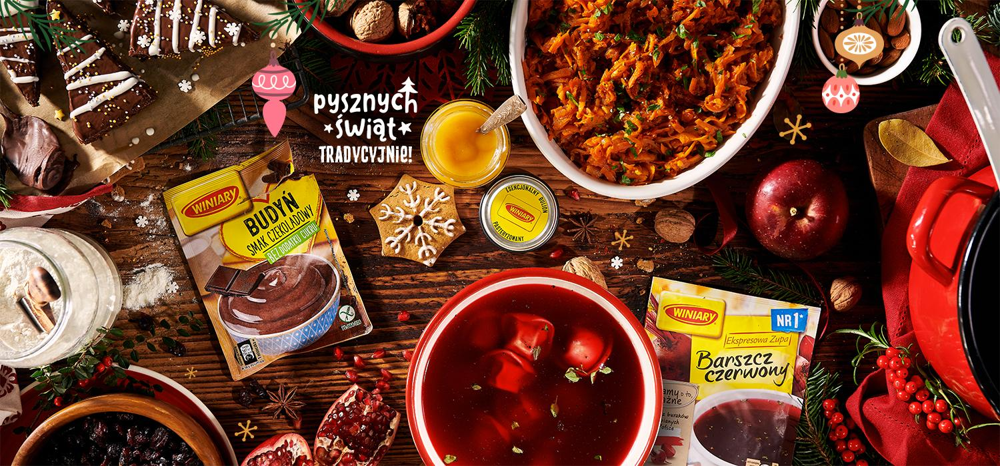

<!DOCTYPE html>
<html lang="en">
<head>
    <meta charset="UTF-8">
    <meta name="viewport" content="width=device-width, initial-scale=1.0">
    <title>Świąteczna Strona</title>

    <style>
        body {
            margin: 0;
            overflow: hidden;
            background: url('tlo.png') center center fixed; /* Dodaj ścieżkę do swojego zdjęcia */
            background-size: cover;
            font-family: 'Arial', sans-serif;
            color: #fff; /* Biały kolor tekstu */
            overflow: auto; /* or overflow: scroll; */
            background: url('tlo.png') center center fixed;
            background-size: cover;
            font-family: 'Arial', sans-serif;
            color: #fff;
}
        header {
            background-color: rgb(0, 43, 162); /* Zielone tło nagłówka */
            color: #ffffff; /* Biały kolor tekstu w nagłówku */
            padding: 1em;
            text-align: center;
        }

        nav {
            background-color: #080061; /* Ciemniejszy odcień zielonego */
            text-align: center;
            padding: 0.5em;
        }

        nav a {
            text-decoration: none;
            color: #fff; /* Biały kolor linków */
            padding: 0.5em 1em;
            margin: 0 0.5em;
            border-radius: 10px; /* Zaokrąglone rogi */
            background-color: #080061; /* Zielony kolor tła linków */
        }

        section {
            padding: 1em;
        }

        footer {
            background-color: #003c67; /* Zielone tło stopki */
            padding: 1em;
            text-align: center;
            color: #ffffff; /* Biały kolor tekstu w stopce */
            margin-top: 20px; /* Dodaj margines u góry */
            margin-bottom: 0; /* Usuń domyślny margines na dole */
            margin-left: 5px; /* Dodaj margines z lewej strony */
            margin-right: 5px; /* Dodaj margines z prawej strony */
        }

        .thumbnail-container {
            display: flex;
            justify-content: space-around;
            margin-top: 20px;
        }

        .thumbnail {
            width: 300px; /* Dostosuj szerokość miniaturki */
            height: 200px; /* Dostosuj wysokość miniaturki */
            border-radius: 10px; /* Zaokrąglone rogi miniaturki */
            overflow: hidden; /* Ukryj ewentualne przekraczające elementy */
            transition: filter 0.3s, transform 0.3s; /* Dodaj efekty przejścia przy zmianie filtra i transformacji */
        }

        .thumbnail img {
            width: 100%; /* Zapełnij szerokość kontenera obrazem */
            height: 100%; /* Zapełnij wysokość kontenera obrazem */
            object-fit: cover; /* Zachowaj proporcje obrazu i wypełnij cały kontener */
        }

        .thumbnail:hover {
            filter: grayscale(0%) brightness(100%); /* Zastosuj efekt desaturacji i zwiększenia jasności po najechaniu kursorem */
            transform: scale(1.1); /* Powiększenie przy najechaniu kursorem */
        }

        .snowfall {
            position: absolute;
            width: 10px;
            height: 10px;
            background-color: #ecf0f1; /* Kolor płatków śniegu */
            border-radius: 50%;
            animation: snowfall linear infinite;
            pointer-events: none;
        }

        @keyframes snowfall {
            0% {
                transform: translateY(0);
            }
            100% {
                transform: translateY(100vh);
            }
        }
    </style>
</head>
<body>
    <!-- Padający śnieg -->
    <div class="snowfall"></div>

    <!-- Tutaj umieść resztę treści strony -->

</body>
</html>

</head>
<body>
    <!-- Padający śnieg -->
    <div class="snowfall"></div>

</head>
<body>
    <header>
        <h1>Wesołe Święta</h1>
    </header>
    <nav>
        <a href="#carols">Lista kolęd</a>
        <a href="#games">Gry świąteczne</a>
        <a href="#recipes">Przepisy</a>
        <a href="#contact">Dane kontaktowe</a>
        <a href="#social">Media społecznościowe</a>
    </nav>
    <section id="carols">
        <h2>Lista kolęd</h2>
        <div class="thumbnail-container">
            <a href="koleda1.html" class="thumbnail">
                
            </a>
            <a href="koleda2.html" class="thumbnail">
                
            </a>
            <a href="koleda3.html" class="thumbnail">
                
            </a>
        </div>
        <section id="games">
            <h2>Gry świąteczne</h2>
            <div id="interactive-game" class="thumbnail" style="cursor: pointer;">
                <a href="gry.html">
                    
                </a>
            </div>
        </section>
        
        <script>
            document.getElementById('interactive-game').addEventListener('click', function() {
                window.location.href = 'krzyzowka.html';
            });
        </script>        
        
    <section id="recipes">
        <h2>Przepisy na świąteczne smakołyki</h2>
        <div id="interactive-game" class="thumbnail" style="cursor: pointer;">
            <a href="jedzonko.html">
                
            </a>
        </div>

        <script type="text/javascript" src="snow.js">     
            </script>

    </section>
    <section id="social">
        <h2>Zdjęcia związane ze Świętami Bożego Narodzenia.</h2>
        <div id="interactive-game" class="thumbnail" style="cursor: pointer;">
            <a href="galeria.html">
                
            </a>
        </div>
    </section>
    <footer id="contact">
        <h2>Dane kontaktowe</h2>
        <p>Napisz do nas pod adresem: karpevychtolik@gmail.com</p>
        <p>Śledź nas na mediach społecznościowych: <a href="https://m.facebook.com/p/Technikum-im-Jana-Zamoyskiego-w-Zwierzy%C5%84cu-100038756511179/" target="_blank">Facebook</a></p>
    </footer>
</body>
</html>